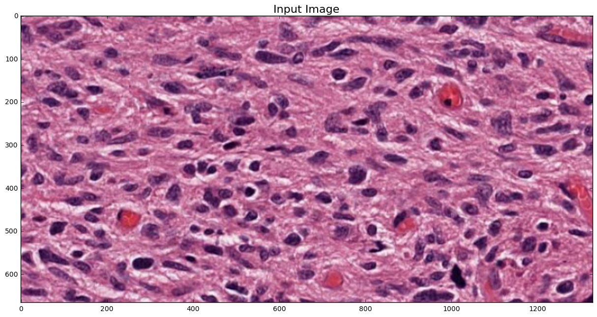

Color Deconvolution¶
In [50]:
import histomicstk as htk
import numpy as np
import scipy as sp
import skimage.io
import skimage.measure
import skimage.color
import matplotlib.pyplot as plt
import matplotlib.patches as mpatches
%matplotlib inline
#Some nice default configuration for plots
plt.rcParams['figure.figsize'] = 15, 15
plt.rcParams['image.cmap'] = 'gray'
titlesize = 24
Load input image¶
In [51]:
inputImageFile = ('https://data.kitware.com/api/v1/file/'
'57802ac38d777f12682731a2/download') # H&E.png
imInput = skimage.io.imread(inputImageFile)[:, :, :3]
plt.imshow(imInput)
_ = plt.title('Input Image', fontsize=16)

Supervised color deconvolution with a known stain matrix¶
In [52]:
# create stain to color map
stainColorMap = {
'hematoxylin': [0.65, 0.70, 0.29],
'eosin': [0.07, 0.99, 0.11],
'dab': [0.27, 0.57, 0.78],
'null': [0.0, 0.0, 0.0]
}
# specify stains of input image
stain_1 = 'hematoxylin' # nuclei stain
stain_2 = 'eosin' # cytoplasm stain
stain_3 = 'null' # set to null of input contains only two stains
# create stain matrix
W = np.array([stainColorMap[stain_1],
stainColorMap[stain_2],
stainColorMap[stain_3]]).T
# perform standard color deconvolution
imDeconvolved = htk.preprocessing.color_deconvolution.ColorDeconvolution(imInput, W)
# Display results
plt.figure()
plt.imshow(imDeconvolved.Stains[:, :, 0])
plt.title(stain_1, fontsize=titlesize)
plt.figure()
plt.imshow(imDeconvolved.Stains[:, :, 1])
_ = plt.title(stain_2, fontsize=titlesize)
Unsupervised color deconvolution using sparse non-negative matrix factorization¶
In [53]:
# create initial stain matrix
W_init = np.array([stainColorMap[stain_1],
stainColorMap[stain_2]]).T
# perform sparse color deconvolution
sparsity_factor = 0.5
imDeconvolved, W_est = htk.preprocessing.color_deconvolution.SparseColorDeconvolution(
imInput, W_init, sparsity_factor)
print 'Estimated stain colors (in rows): '
print W_est.T
# Display results
plt.figure()
plt.imshow(imDeconvolved[:, :, 0])
plt.title(stain_1, fontsize=titlesize)
plt.figure()
plt.imshow(imDeconvolved[:, :, 1])
_ = plt.title(stain_2, fontsize=titlesize)
Estimated stain colors (in rows):
[[ 0.48475365 0.78114376 0.39348231]
[ 0.18976762 0.81925652 0.54111645]]